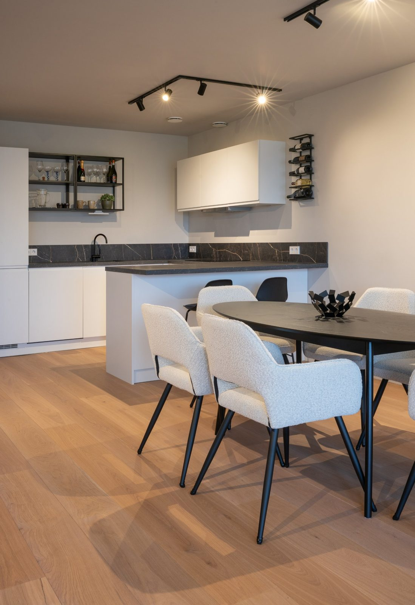
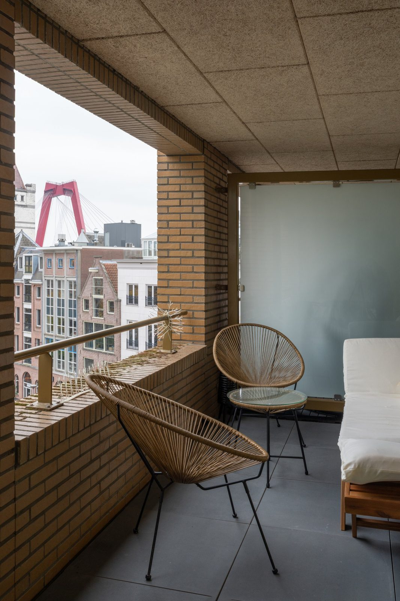
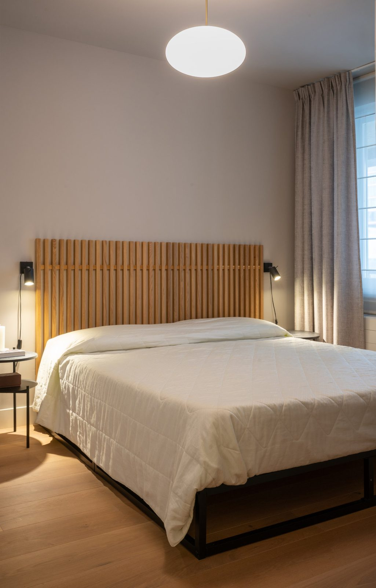
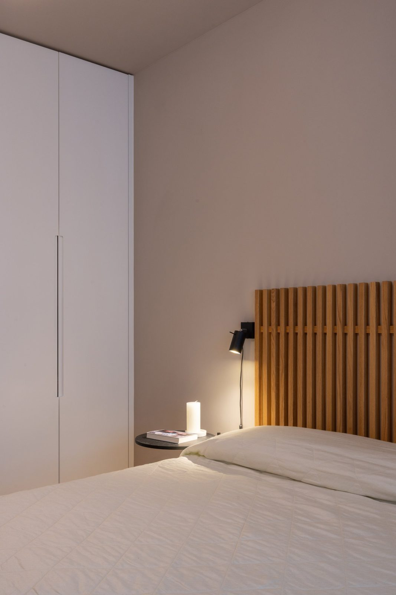
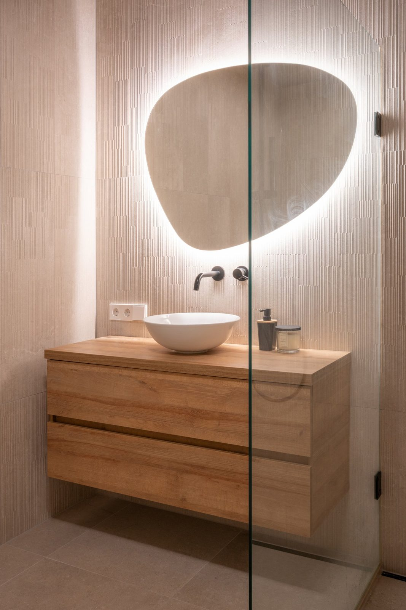
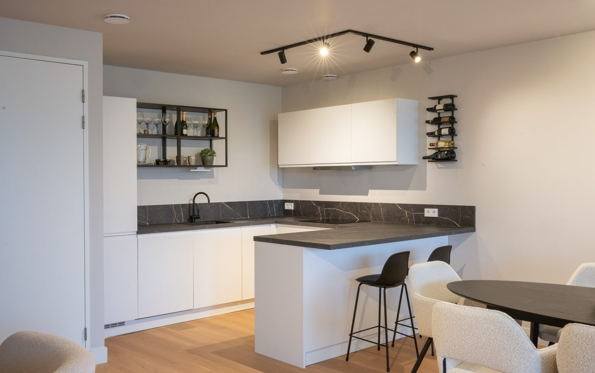
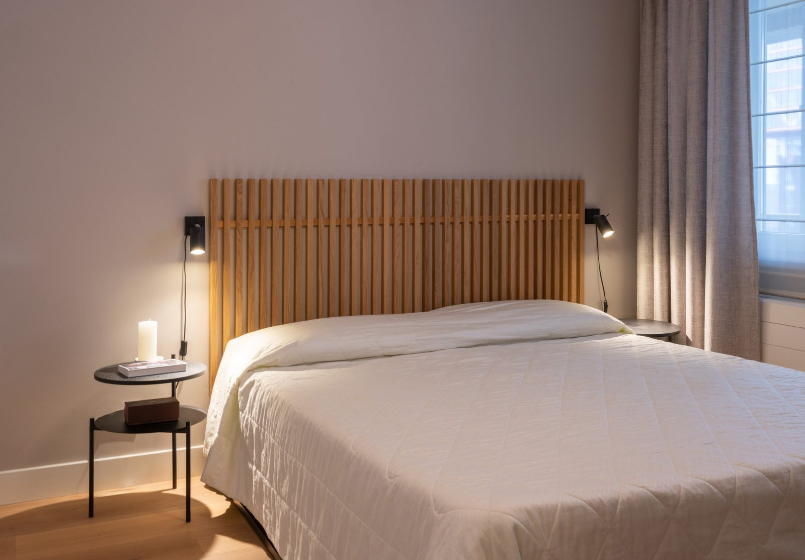
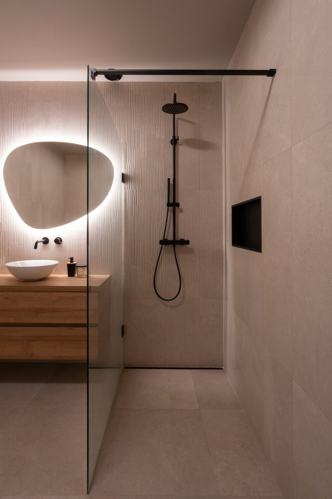
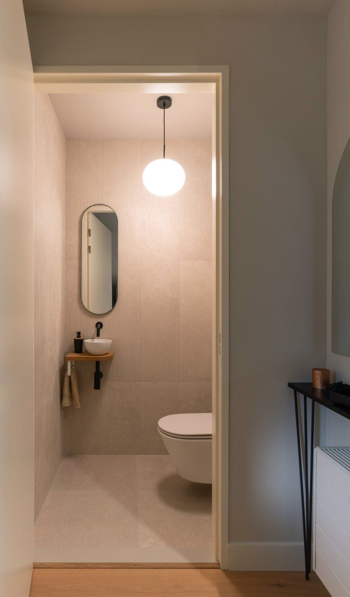
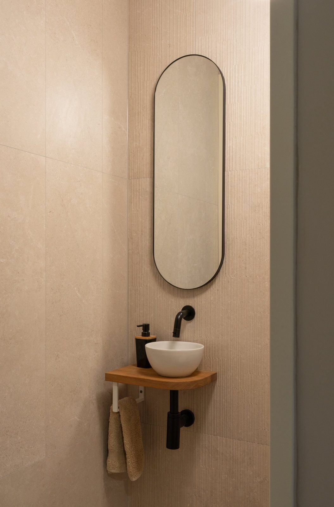

A refined city retreat in Rotterdam
Apartments · Rotterdam


The brief
Located in the heart of Rotterdam, this apartment belongs to a busy professional who travels frequently and wanted a home that offered a sense of calm and simplicity away from the pace of city life.
The brief was to create a sleek, contemporary and comfortable interior, guided by a clearly defined palette of white, black and soft beige and stone tones.
The apartment had an open-plan layout but no kitchen, while the bathroom required a complete renovation. The project involved transforming the apartment into a fully functioning home, with particular attention to intelligent storage, clean lines and a cohesive material palette.
The design
The apartment underwent a complete renovation, introducing a new kitchen within the open-plan living space and creating a natural connection between cooking, dining and living.
The kitchen was designed with clean white cabinetry, a dark worktop and carefully considered details, bringing definition and contrast to the otherwise soft, neutral palette.
In the bathroom, the existing bathtub was replaced with a generous walk-in shower, complete with a built-in niche for everyday essentials. A bespoke oak vanity and a large mirror with dimmable integrated lighting create a relaxed, spa-inspired atmosphere.
In the bedroom, I designed floor-to-ceiling wardrobes to maximise storage and maintain a clean, uncluttered appearance. Achieving the required depth meant repositioning the existing bedroom doorway, allowing the new joinery to be fully integrated into the space. The bespoke oak headboard introduces another layer of warmth and gives the bedroom a more intimate character.
An additional room was transformed into a dedicated laundry and storage area, providing practical space for household essentials, suitcases and shoes, while keeping the main living areas streamlined and organised.
The living room was kept deliberately understated, with comfortable seating, soft curtains and wool upholstery introducing texture and warmth. The result is a space that feels contemporary and refined without becoming overly minimal.



Materials and details
The material palette was intentionally restrained, allowing texture, natural finishes and subtle contrasts to give the interior its character.
Oak flooring, bespoke oak joinery and the bathroom vanity bring warmth and continuity throughout the apartment. Textured tiles add depth and tactility to the bathroom, while the combination of white surfaces, soft beige and stone tones creates a calm and timeless foundation.
Black accents, introduced through the kitchen finishes, shelving and lighting, provide definition and contrast, keeping the neutral palette crisp and balanced.
Soft curtains and wool fabrics add a final layer of comfort, preventing the clean lines and minimal aesthetic from feeling cold.
Every material and detail was selected to create a home that is functional, beautifully organised and understated in its expression: a calm retreat in the middle of the city.





Project information
- Services
- Interior design · Spatial planning · Joinery · Lighting · Project management
- Location
- Rotterdam, Netherlands
- Property type
- City-centre apartment
- Photography
- Hilke Sievers